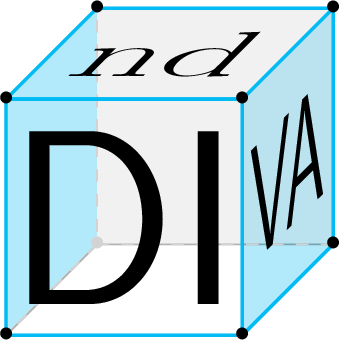
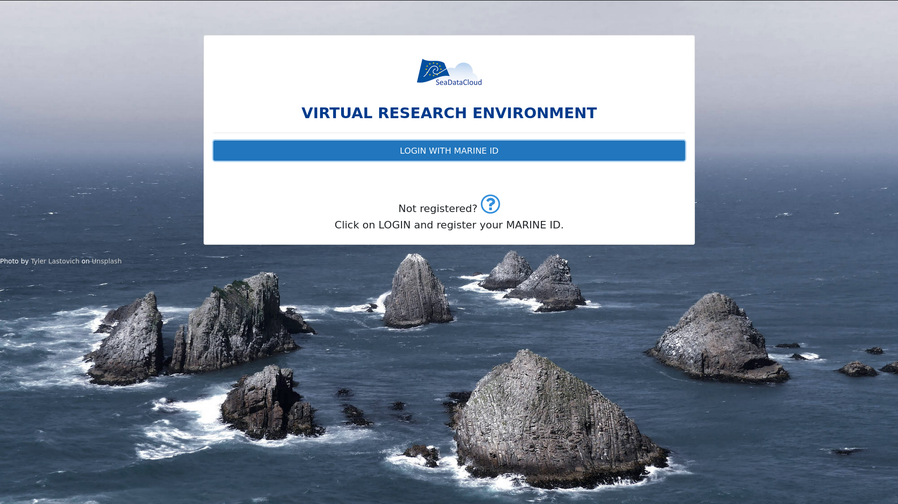

2nd On-line SeaDataCloud User Workshop
Hi-Tech to High Knowledge
Data interpolation: what can we do {for, with} you?


C. Troupin, A. Barth, J.-M. Beckers & the VRE team
What is DIVA
Data
Interpolating
Variational
Analysis

What do we mean by
"interpolation"
Getting gridded fields from sparse, in situ data ⤵️
(≃ getting information where we don't have measurements)
Why interpolation
in oceanography üåä
is challenging

- A large (huge) amount of data points available
- Regions without any observation
- Physical obstacles: the topography
- Multi-dimensional: longitude, latitude, depth and time
How does DIVA work
1. Observations influence their neighbourhood
over a certain distance

2. Observations are assigned a certain weigh,
translating the confidence of the measurement

3. The tool minimises a cost function taking into account:
- The distance between observation and analysis
- The regularity (or smoothness) of the interpolated field
Implementation:
DIVAnd vs. DIVA
DIVA (1991-2016) aka DIVA classic

- Interpolation in 2 dimensions, based on a finite-element solver
- Coded in Fortran 77 and 95
- Not developed anymore, except bug fixes
DIVAnd (2014-), alias the new DIVA

- Interpolation in
n dimensions (n=2, 3, 4, ...) - Coded in Julia
- ≠ not a new release of DIVA
Why Julia
Fast, high-level, dynamic language
Started in 2012 | Now at version 1.5.1
Open source | ↗️ growing user community
Why Julia
https://www.nature.com/articles/d41586-019-02310-3
How to run & use
DIVAnd
Install Julia and download the code
https://github.com/gher-ulg/DIVAnd.jl
DIVA (2D) within Ocean Data View
http://odv.awi.de/
DIVA-on-Web (2D)
http://ec.oceanbrowser.net/emodnet/diva.html
Jupyter notebooks as user guidelines
https://github.com/gher-ulg/Diva-Workshops/

Jupyter notebooks inside
the Virtual Research Environment


Who's using it
SeaDataCloud regional leaders
Regional climatologies for temperature and salinity
https://www.seadatanet.org/Products/Climatologies
EMODnet Chemistry regional leaders
Gridded fields of nutrient concentrations
http://www.emodnet-chemistry.eu/products
EMODnet Biology
Creation of specific abundance products
http://www.emodnet-biology.eu/data-products
Latest developments
High-frequency radar interpolation
Adding physical constrains to improve the reconstruction
Heatmap based on presence/absence data
Pluto notebooks instead of Jupyer
lightweight: written in pure Julia
simple: no hidden workspace state, cool user interface
reactive: automatically updated when a cell changes
Concluding remarks
Why may I not be able to use it
Hofstadter's Law:
It always takes longer than you expect,
even when you take into account Hofstadter's Law."
Does it work only with oceanographic data
Does it work only with oceanographic data
Fire heatmap, based on remote sensing data (MODIS and VIIRS)
Your state after this presentation
Bad work, I don't want to use this tool
Not bad, but I'll never use it
Cool, I want to try it with a dataset of mine
Quick recap
- DIVAnd is a software tool specifically designed for
the spatial interpolation of oceanographic data - The code is written in the Julia language and
optimised to process large amounts of data - The tool is currently used in different EMODnet lots
and deployed in the frame of other Europea initiaves
such as PHIDIAS, BlueCloud, EOSC-Hub